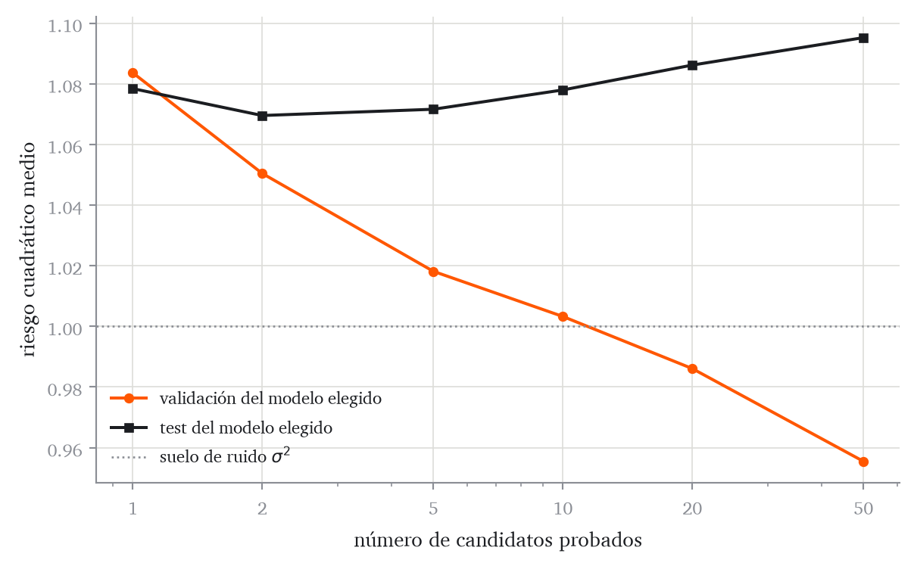
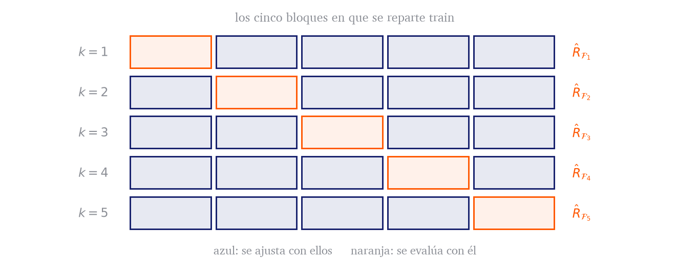
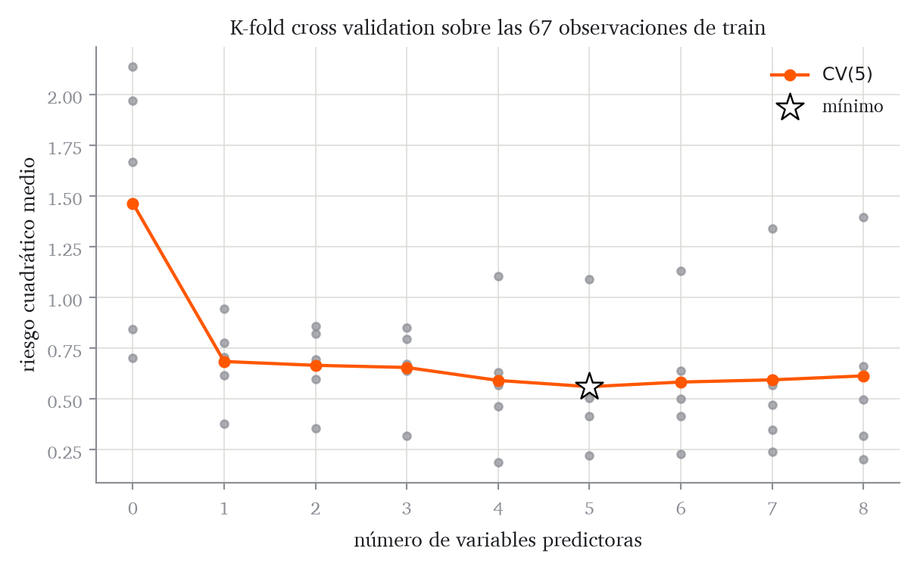
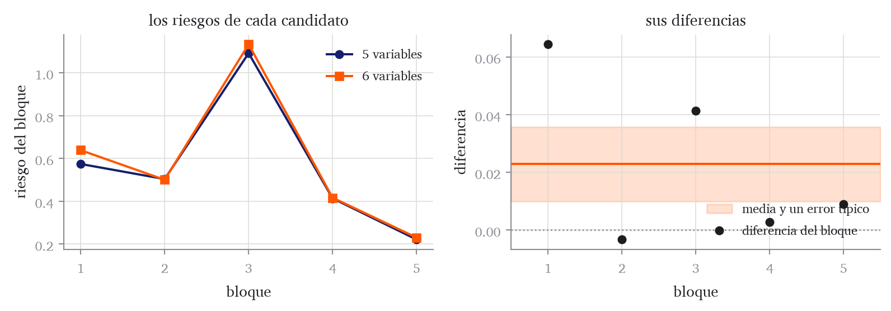

Los capítulos anteriores resolvieron el problema de ajuste. Fijada una clase de hipótesis, construimos el riesgo empírico sobre la muestra disponible y lo minimizamos para obtener \(\hat{\boldsymbol{w}}\). El resultado es el modelo concreto \(f_{\hat{\boldsymbol{w}}}\): una ecuación cuyos parámetros ya están fijados.
No obstante, esto no resuelve el problema de generalización. Al encontrar los parámetros \(\hat{\boldsymbol{w}}\) minimizando sobre la muestra de datos disponible, el procedimiento aprovecha tanto la señal como las fluctuaciones accidentales (ruido) de esa muestra. Por ello, el riesgo empírico del modelo ajustado, evaluado sobre las muestras utilizadas para el entrenamiento, es optimista. El interpolador de Definición 1.2 era el caso extremo.
Dado un modelo ajustado \(\hat{\boldsymbol{w}}\), la medida más razonable de rendimiento no es el riesgo de entrenamiento, sino el riesgo verdadero de Definición 2.3,
es decir, la pérdida media que el modelo sufriría sobre nuevas extracciones de la distribución de los datos \(P^\star\). El problema es que en la práctica, no conocemos \(P^\star\), tan solo tenemos acceso a una muestra finita de esta distribución.
Las dos tareas
En este capítulo abordaremos dos de las tareas fundamentales del aprendizaje automático. Explicaremos cómo afrontar cada una de ellas aprovechando al máximo los datos disponibles.
Tarea 1: Estimar el riesgo verdadero de un modelo ya ajustado. Una vez fijado un modelo \(f_{\hat{\boldsymbol{w}}}\), nuestro objetivo es estimar su riesgo verdadero \(R(\hat{\boldsymbol{w}})\) y cuantificar la precisión de dicha estimación. Este es el valor de rendimiento esperado que debe acompañar a cualquier modelo en su entrega final.
Tarea 2: Elegir el mejor procedimiento entre \(M\) alternativas. En la práctica, rara vez contamos con un único modelo \(f_{\hat{\boldsymbol{w}}}\). Normalmente necesitamos explorar varias alternativas antes de decidir el modelo final. Por ejemplo, tenemos que tomar decisiones como si merece la pena introducir una variable predictora extra. Al hacer esto, no estamos comparando modelos terminados, sino procedimientos de aprendizaje. Un procedimiento es, esencialmente, una “receta” que recibe datos de entrenamiento y produce un modelo; por tanto, evaluar qué procedimiento elegir requiere un enfoque analítico distinto al de evaluar un modelo cuyos parámetros ya están congelados.
Antes de resolver ambas tareas, estableceremos una referencia de rendimiento mínima: el modelo nulo. Dado que una cifra de riesgo aislada carece de escala interpretativa, necesitamos fijar este punto de partida elemental para saber si nuestros procedimientos aprenden algo útil.
Empezar por una referencia sencilla
La elección natural contra la que comparar el riesgo de un modelo dado es evaluar el riesgo de un modelo que ignora por completo las variables predictoras. Consideremos la familia de funciones constantes, \(\{f_c(\mathbf{x})=c:c\in\mathbb{R}\}\), y el procedimiento que elige el valor de \(c\) minimizando el riesgo empírico.
Definición 4.1 (Modelo nulo) El modelo nulo \(\bar{f}\) es el modelo que predice exactamente el mismo valor para todas las observaciones, sin utilizar \(\mathbf{x}\).
Queda por decidir qué valor. Este valor será el que minimice el riesgo empírico sobre el conjunto de entrenamiento, y dependerá de la función de coste que elijamos.
Lema 4.1 (Bajo coste cuadrático, la mejor constante es la media) Sea \(\hat{R}(c)=\frac{1}{n}\sum_{i=1}^{n}(y_i-c)^2\). Entonces
Se anula solo en \(c=\bar{y}\). Además \(\hat{R}''(c)=2>0\), así que ese punto crítico es el mínimo, y es el único. Sustituyendo \(c=\bar{y}\) se obtiene el valor del enunciado.
Durante este capítulo, ilustraremos los conceptos que vayan apareciendo usando los datos de próstata del capítulo anterior. El fichero conserva la partición de The Elements of Statistical Learning: 67 observaciones de entrenamiento y 30 observaciones que permanecerán aisladas hasta que formalicemos su uso.
La columna train vale T para las observaciones de entrenamiento y F para las de test. El capítulo no usa estas últimas para ajustar ni para elegir.
El siguiente código separa con claridad el procedimiento de ajuste, ajusta_lineal, del modelo que devuelve, ModeloLineal, cuyos coeficientes ya están fijados.
La media se calcula con las 67 observaciones de entrenamiento, no con las 97. Una vez fijada esa constante, \(\bar{f}(\mathbf{x})=\bar y_{\mathcal{D}_{\mathrm{train}}}\) es un modelo concreto.
constante ajustada: 2.4523
modelo nulo, riesgo en train: 1.4370
El modelo nulo predice la constante \(2.4523\) y tiene riesgo \(1.4370\) en train.
Ejercicio 4.1 (La mejor constante con otra pérdida) El resultado de Lema 4.1 depende de la pérdida cuadrática.
Escribe el riesgo empírico de una constante \(c\) con la pérdida absoluta, \(\frac{1}{n}\sum_i\left\lvert y_i-c \right\rvert\), y explica por qué no se puede derivar en todo punto.
Argumenta, moviendo \(c\) un poco a la derecha y contando cuántas observaciones quedan a cada lado, que el mínimo se alcanza en la mediana de la muestra.
Calcula con torch la media y la mediana de y_train y comprueba cuál de las dos da menor error absoluto medio.
Tarea 1: estimar el riesgo de un modelo ya ajustado
Comenzamos explicando cómo resolver la primera de las tareas anunciadas. Imaginemos que un modelo ajustado con una base de datos \(\mathcal{D}_{\mathrm{train}}\) produce parámetros \(\hat{\boldsymbol{w}}\). Como hemos discutido, el riesgo verdadero de este modelo es:
La forma ingenua de estimar este riesgo consistiría en promediar las pérdidas sobre el conjunto de datos \(\mathcal{D}_{\mathrm{train}}\). Es decir, calculando:
El problema es que \(\hat{\boldsymbol{w}}\) se obtuvo minimizando precisamente esa media. Veremos que esta medida de riesgo es una estimación optimista del riesgo verdadero.
Proposición 4.1 (El riesgo en train es optimista en media) Sean las observaciones de \(\mathcal{D}_{\mathrm{train}}\) extracciones independientes de \(P^\star\). Sea \(\hat{\boldsymbol{w}}\) el minimizador del riesgo empírico sobre \(\mathcal{D}_{\mathrm{train}}\) y sea \(\boldsymbol{w}^\star\) un minimizador del riesgo verdadero \(R(\boldsymbol{w})=\mathbb{E}_{P^\star}\!\left[ \ell(Y,f_{\boldsymbol{w}}(X)) \right]\) de Ecuación 2.3. Con las dos esperanzas tomadas sobre muestras de entrenamiento de tamaño \(n_{\mathrm{train}}\),
Demostración. Para la primera desigualdad, \(\hat{\boldsymbol{w}}\) minimiza \(\hat{R}_{\mathcal{D}_{\mathrm{train}}}\), luego \(\hat{R}_{\mathcal{D}_{\mathrm{train}}}(\hat{\boldsymbol{w}})\leq\hat{R}_{\mathcal{D}_{\mathrm{train}}}(\boldsymbol{w}^\star)\) sea cual sea la muestra que salga. Tomando esperanzas, y usando que \(\boldsymbol{w}^\star\) está fijado sin mirar la muestra, de modo que por Lema 1 la esperanza de cada pérdida vale \(R(\boldsymbol{w}^\star)\),
Para la segunda, \(R(\boldsymbol{w}^\star)\leq R(\boldsymbol{w})\) para todo \(\boldsymbol{w}\) por definición de \(\boldsymbol{w}^\star\), en particular para \(\hat{\boldsymbol{w}}\), y las desigualdades se conservan al tomar esperanzas.
Esto nos dice que el riesgo \(\hat{R}_{\mathcal{D}_{\mathrm{train}}}(\hat{\boldsymbol{w}})\) es, en promedio, menor o igual que el riesgo verdadero del modelo ajustado, \(R(\hat{\boldsymbol{w}})\). Es consecuencia de evaluar \(\hat{\boldsymbol{w}}\) sobre las mismas observaciones con las que se calculó, y el resultado siguiente dice qué pasa cuando eso no ocurre.
Teorema 4.1 (El error de test es insesgado para un modelo fijo) Sea \(\hat{\boldsymbol{w}}\) un vector de parámetros fijado sin usar la muestra \(\mathcal{D}_{\mathrm{test}}\), y sean las observaciones de \(\mathcal{D}_{\mathrm{test}}\) extracciones independientes de \(P^\star\). Entonces
Fijado \(\boldsymbol{w}\), la función \(g(\mathbf{x},y)=\ell\bigl(y,f_{\boldsymbol{w}}(\mathbf{x})\bigr)\) está elegida sin mirar \(\mathcal{D}_{\mathrm{test}}\), y cada observación \((\mathbf{x}_i,y_i)\) de ese conjunto es una extracción de \(P^\star\). Por Lema 1, la esperanza de cada sumando es la integral de \(g\) contra \(P^\star\), es decir \(\mathbb{E}_{P^\star}\!\left[ \ell\bigl(Y,f_{\boldsymbol{w}}(X)\bigr) \right]=R(\boldsymbol{w})\), que es la definición de Ecuación 2.3 y es la misma para todos los sumandos. La esperanza es lineal, así que la esperanza de la media es la media de las esperanzas:
En suma, si conociéramos \(P^\star\), dado un modelo ajustado con parámetros \(\hat{\boldsymbol{w}}\), podríamos calcular \(R(\hat{\boldsymbol{w}})\) integrando directamente. Como \(P^\star\) es desconocida, la única aproximación disponible es otra media empírica; Proposición 4.1 obliga a calcularla sobre observaciones que no hayan intervenido en el ajuste. Esto motiva la primera partición.
Definición 4.2 (Entrenamiento y test) Para poder ajustar un modelo predictivo y estimar su riesgo de generalización, la muestra \(\mathcal{D}\) debe repartirse al azar en dos partes disjuntas:
\(\mathcal{D}_{\mathrm{train}}\), de tamaño \(n_{\mathrm{train}}\), con la que el procedimiento fija los parámetros del modelo;
\(\mathcal{D}_{\mathrm{test}}\), de tamaño \(n_{\mathrm{test}}\), con la que se mide el riesgo de ese modelo, sin haberla consultado antes.
Escribimos \(\hat{R}_{\mathcal{D}_{\mathrm{test}}}(\boldsymbol{w})\) para el riesgo empírico calculado sobre \(\mathcal{D}_{\mathrm{test}}\), y análogamente para \(\mathcal{D}_{\mathrm{train}}\).
El reparto aleatorio hace que ambos subconjuntos representen la misma \(P^\star\).
Por Teorema 4.1, condicionalmente a \(\mathcal{D}_{\mathrm{train}}\), \(\hat{R}_{\mathcal{D}_{\mathrm{test}}}(\hat{\boldsymbol{w}})\) es una estimación insesgada de \(R(\hat{\boldsymbol{w}})\) siempre que \(\mathcal{D}_{\mathrm{test}}\) permanezca ajeno a toda decisión tomada para calcular \(\hat{\boldsymbol{w}}\). No obstante, no olvidemos que \(\hat{R}_{\mathcal{D}_{\mathrm{test}}}(\hat{\boldsymbol{w}})\) es tan solo una estimación. La precisión de la misma, dependerá del tamaño de \(\mathcal{D}_{\mathrm{test}}\).
Con qué precisión se mide
La estimación de test es una media de \(n_{\mathrm{test}}\) números, y como cualquier media tiene una varianza que depende del tamaño de la muestra con la que se calcula.
Proposición 4.2 (Precisión de la estimación de test) En las condiciones de Teorema 4.1,
El subíndice importa: a la izquierda la varianza es sobre las muestras de test de tamaño \(n_{\mathrm{test}}\), y a la derecha sobre una sola observación nueva.
Demostración. Las \(n_{\mathrm{test}}\) pérdidas son independientes y tienen todas la misma varianza, que llamamos \(v\). La varianza de su suma es \(n_{\mathrm{test}}\,v\), y multiplicar por \(1/n_{\mathrm{test}}\) multiplica la varianza por \(1/n_{\mathrm{test}}^2\), de modo que queda \(v/n_{\mathrm{test}}\).
El error típico de la estimación es entonces \(\sqrt{v/n_{\mathrm{test}}}\), que decrece a un ritmo de \(1/\sqrt{n_{\mathrm{test}}}\): para reducir la incertidumbre a la mitad, es necesario cuadruplicar el tamaño del conjunto de test. En la práctica, no obstante, la varianza \(v\) de las pérdidas es desconocida. El procedimiento riguroso consiste en aproximarla utilizando la varianza muestral (insesgada) de las pérdidas individuales evaluadas sobre \(\mathcal{D}_{\mathrm{test}}\), que denotaremos como \(s^2\). Por ello, el estándar para informar sobre el rendimiento de generalización de un modelo consiste en reportar su estimación puntual \(\hat{R}_{\mathcal{D}_{\mathrm{test}}}(\boldsymbol{w})\) junto con un margen de \(\pm\) un error típico estimado:
Esto ha de interpretarse de la siguiente manera: al calcular el riesgo empírico como una media de variables aleatorias independientes e idénticamente distribuidas, el Teorema Central del Límite garantiza que, para un \(n_{\mathrm{test}}\) suficientemente grande, la distribución de nuestra estimación converge a una normal. Por tanto, el intervalo construido al sumar y restar un error típico al riesgo estimado capturará el riesgo verdadero \(R(\boldsymbol{w})\) en aproximadamente un 68 % de las realizaciones de \(\mathcal{D}_{\mathrm{test}}\).
Ejercicio 4.2 (Cuánto test hace falta) Supón pérdidas cuadráticas con ruido gaussiano de nivel \(\sigma\), para las que se puede comprobar que \(\mathrm{Var}\!\left( \ell \right)=2\sigma^4\).
Usando Proposición 4.2, escribe el error típico de \(\hat{R}_{\mathcal{D}_{\mathrm{test}}}\) en función de \(\sigma\) y de \(n_{\mathrm{test}}\).
Divide ese error típico por el propio riesgo \(\sigma^2\) y comprueba que el error relativo es \(\sqrt{2/n_{\mathrm{test}}}\), que no depende de \(\sigma\).
Calcula cuántas observaciones de test hacen falta para un error relativo del 20 % y para uno del 10 %.
Compara el resultado con las 30 observaciones de test de los datos de próstata.
Tarea 2: elegir el mejor procedimiento entre \(M\) alternativas
Con lo expuesto en la sección anterior, ya sabemos que necesitamos reservar una parte de la muestra de datos (\(\mathcal{D}_{\mathrm{test}}\)) exclusivamente para evaluar un modelo y reportar una estimación honesta de su error de generalización.
En la práctica, no obstante, rara vez ejecutamos una única estrategia de ajuste. Usualmente necesitamos explorar y elegir entre \(M\) alternativas. En los datos de próstata, por ejemplo, podemos probar a ajustar modelos usando solo la variable más correlacionada con la respuesta, las dos más correlacionadas, y así sucesivamente hasta considerar las ocho. La pregunta natural es cuál de estas alternativas es mejor.
Si conociéramos la distribución poblacional \(P^\star\), la respuesta sería directa. Aplicaríamos las \(M\) alternativas a nuestro conjunto de entrenamiento \(\mathcal{D}_{\mathrm{train}}\) para obtener \(M\) modelos concretos. Luego, integraríamos sobre \(P^\star\) para calcular el riesgo verdadero exacto de cada uno de esos modelos, y simplemente entregaríamos el que tuviera el valor más bajo.
Sin embargo, en la realidad no conocemos \(P^\star\), así que no podemos calcular el riesgo exacto de los \(M\) modelos. Como disponemos de un conjunto \(\mathcal{D}_{\mathrm{test}}\) reservado, y sabemos que el error medido en él es insesgado (por Teorema 4.1), una estrategia aparentemente razonable sería la siguiente:
Ajustar los \(M\) modelos usando todos los datos de \(\mathcal{D}_{\mathrm{train}}\).
Estimar el riesgo verdadero de esos \(M\) modelos evaluándolos en \(\mathcal{D}_{\mathrm{test}}\).
Seleccionar el modelo que tenga menor error en test.
Esta estrategia falla, por la razón siguiente.
Proposición 4.3 (El mínimo de varias estimaciones insesgadas es optimista) Sean \(Z_1,\ldots,Z_M\) estimaciones y \(q_1,\ldots,q_M\) las cantidades que estiman, cada una sin sesgo: \(\mathbb{E}\!\left[ Z_k \right]=q_k\) para todo \(k\). Entonces
Demostración. Para cada \(j\) se cumple \(\min_k Z_k\leq Z_j\), porque el mínimo de un conjunto es menor o igual que cualquiera de sus elementos. Tomando esperanzas, que conservan las desigualdades, \(\mathbb{E}\!\left[ \min_k Z_k \right]\leq\mathbb{E}\!\left[ Z_j \right]=q_j\). Como esto vale para todo \(j\), vale también para el \(j\) que hace \(q_j\) más pequeño.
Para entender las consecuencias de esta proposición, apliquémosla a nuestro caso. Fijado \(\mathcal{D}_{\mathrm{train}}\), tenemos \(M\) modelos concretos. Los \(Z_k\) representan sus riesgos estimados en el test, y los \(q_k\) sus verdaderos riesgos de generalización. La proposición demuestra que \(\mathbb{E}_{\mathcal{D}_{\mathrm{test}}}\!\left[ \min_k Z_k \right]\leq\min_k q_k\). Es decir, la estimación que obtenemos al quedarnos con el mínimo es, en promedio, excesivamente optimista.
El modelo que menor riesgo de test consigue puede haber obtenido un error bajo por 1) tratarse de un modelo genuinamente bueno (un \(q_k\) bajo) o 2) ha tenido suerte con las observaciones específicas que componen esa muestra de test (una fluctuación favorable en \(Z_k\)). Cuantos más candidatos evaluemos, más probable es que alguno parezca excelente por puro accidente.
Como consecuencia directa de buscar este mínimo, el riesgo medido para el modelo ganador está siempre sesgado a la baja. Lo hemos “coronado” precisamente porque ha sido capaz de explotar las peculiaridades de esa muestra concreta para presentar la mejor métrica posible.
Esta es la razón fundamental por la que evaluar para elegir “quema” la muestra utilizada. En el instante en que \(\mathcal{D}_{\mathrm{test}}\) interviene para decidir qué modelo seleccionar, la estimación de riesgo resultante deja de ser independiente del modelo elegido, rompiendo la garantía de Teorema 4.1. Si la estimación que acompaña al modelo final debe ser honesta, se deduce una regla estricta de partición: el conjunto de datos empleado para elegir el mejor procedimiento debe ser estrictamente distinto al conjunto empleado para evaluar su rendimiento final.
El siguiente experimento estudia este fenómeno. Se comparan varios procedimientos intercambiables: todos producen una recta usando, además, una variable de ruido distinta. Se elige con 40 observaciones apartadas, que hacen el papel del conjunto sobre el que la estrategia ingenua elige e informa, y se mide el modelo seleccionado sobre otras 4000, que aproximan su riesgo verdadero.
def experimento_seleccion(M, n_ajuste=40, n_val=40, n_test=4000):def genera(n): x = torch.rand(n) *4-21return x, 1+2* x + torch.randn(n) x_a, y_a = genera(n_ajuste) x_v, y_v = genera(n_val) x_t, y_t = genera(n_test) Z_a, Z_v, Z_t = (torch.randn(n, M) for n in (n_ajuste, n_val, n_test)) riesgo_val, riesgo_test = [], []2for k inrange(M): A = torch.stack([torch.ones(n_ajuste), x_a, Z_a[:, k]], dim=1) modelo_k = ajusta_lineal(A, y_a) riesgo_val.append(mse(modelo_k.predict( torch.stack([torch.ones(n_val), x_v, Z_v[:, k]], dim=1)), y_v)) riesgo_test.append(mse(modelo_k.predict( torch.stack([torch.ones(n_test), x_t, Z_t[:, k]], dim=1)), y_t))3 elegido =int(torch.tensor(riesgo_val).argmin())return riesgo_val[elegido], riesgo_test[elegido]
1
El ruido tiene \(\sigma=1\), así que el riesgo de la señal verdadera es \(1\). Ningún modelo puede bajar de ahí.
2
Cada candidato añade su propia variable inútil. Todos tienen tres parámetros, y la variable añadida es ruido independiente, así que ningún candidato tiene ventaja sobre otro.
3
Se elige con el conjunto apartado y se guardan dos cosas: el riesgo del modelo seleccionado sobre ese mismo conjunto, que es el número que uno estaría tentado de informar, y su riesgo sobre datos nuevos.
Código
torch.manual_seed(0)repeticiones =2000resultados = []for M in (1, 2, 5, 10, 20, 50): acumulado = torch.zeros(2)for _ inrange(repeticiones): acumulado += torch.tensor([float(v)for v in experimento_seleccion(M)]) resultados.append((M, *(acumulado / repeticiones).tolist()))print(" M validación del elegido test del elegido")for M, v, t in resultados:print(f"{M:3d}{v:.4f}{t:.4f}")
M validación del elegido test del elegido
1 1.0836 1.0784
2 1.0504 1.0695
5 1.0181 1.0716
10 1.0033 1.0779
20 0.9861 1.0861
50 0.9555 1.0952
La segunda columna, el riesgo de test del modelo elegido, apenas se mueve. La primera columna, en cambio, baja en los seis casos, de \(1.084\) con un candidato a \(0.956\) con cincuenta. Las dos miden el mismo modelo, y la única diferencia entre ellas es que la primera se calcula sobre el conjunto que se usó para elegirlo.
Con un solo candidato las dos columnas prácticamente coinciden, \(1.084\) frente a \(1.078\), que es lo que dice Teorema 4.1 aplicado a ese conjunto: cuando no se elige, la estimación es honesta. Con cincuenta candidatos la separación es de \(0.14\), un 13 % del valor.
Código
Ms = [r[0] for r in resultados]fig, ax = plt.subplots(figsize=(6.4, 4.0))ax.plot(Ms, [r[1] for r in resultados], marker="o", ms=4, color=NARANJA, label="validación del modelo elegido")ax.plot(Ms, [r[2] for r in resultados], marker="s", ms=4, color=TINTA, label="test del modelo elegido")ax.axhline(1.0, color=GRIS, lw=1, linestyle=":", label=r"suelo de ruido $\sigma^2$")ax.set_xscale("log")ax.set_xticks(Ms)ax.set_xticklabels([str(m) for m in Ms])ax.set(xlabel="número de candidatos probados", ylabel="riesgo cuadrático medio")ax.legend(fontsize=8.5)plt.tight_layout()

Figura 4.1: Lo que le pasa a la estimación cuando se prueban más candidatos. La línea negra aproxima el riesgo verdadero del modelo elegido y apenas se mueve porque los candidatos son intercambiables por construcción. La naranja es el número que uno estaría tentado de informar y se separa cada vez más de la negra. Con veinte candidatos cruza el suelo de ruido \(\sigma^2=1\), y a partir de ahí informa de un riesgo menor que el que cualquier modelo de este experimento puede alcanzar.
Validación
La conclusión de lo anterior es inequívoca. \(\mathcal{D}_{\mathrm{test}}\) solo conserva la garantía de Teorema 4.1 si no participa en la Tarea 2. Debe aislarse desde el principio y abrirse una sola vez, cuando el procedimiento ya está elegido y el modelo final ya está fijado.
Por tanto, toda la selección debe ocurrir usando exclusivamente \(\mathcal{D}_{\mathrm{train}}\). Sin embargo, no podemos usar la totalidad de \(\mathcal{D}_{\mathrm{train}}\) para ajustar los \(M\) candidatos y a la vez para elegir al ganador. Como demostró Proposición 4.1, evaluar un modelo sobre sus propios datos de ajuste produce un riesgo falsamente optimista. Peor aún, este sesgo beneficia sistemáticamente a los modelos más complejos, que parecerían siempre los ganadores por puro sobreajuste, arruinando la comparación. Por tanto, para evaluar las alternativas de forma justa, estamos obligados a fraccionar \(\mathcal{D}_{\mathrm{train}}\): una parte para ajustar los candidatos y otra independiente para seleccionarlos.
La forma más inmediata de ejecutar este fraccionamiento es la validación simple. Apartamos temporalmente un subconjunto \(\mathcal{D}_{\mathrm{val}}\subset \mathcal{D}_{\mathrm{train}}\) de tamaño \(n_{\mathrm{val}}\). El resto de los datos, que llamaremos \(\mathcal{D}_{\mathrm{ajuste}}\) y tiene \(n_{\mathrm{train}}- n_{\mathrm{val}}\) observaciones, se utiliza para ajustar las \(M\) alternativas. Esto produce \(M\) modelos provisionales que evaluamos y comparamos sobre \(\mathcal{D}_{\mathrm{val}}\). A nivel práctico, esto implica la siguiente partición de los datos.
Definición 4.3 (Entrenamiento, validación y test) Primero se separa \(\mathcal{D}_{\mathrm{test}}\) al azar y se denomina \(\mathcal{D}_{\mathrm{train}}\) al resto de los datos. Una validación simple parte a su vez \(\mathcal{D}_{\mathrm{train}}=\mathcal{D}_{\mathrm{ajuste}}\cup\mathcal{D}_{\mathrm{val}}\), con lo que quedan tres subconjuntos disjuntos y tres papeles distintos:
\(\mathcal{D}_{\mathrm{ajuste}}\), con \(n_{\mathrm{train}}-n_{\mathrm{val}}\) observaciones, fija los parámetros de cada modelo provisional, y por eso el riesgo medido sobre él es optimista según Proposición 4.1;
\(\mathcal{D}_{\mathrm{val}}\), con \(n_{\mathrm{val}}\) observaciones, compara los procedimientos candidatos y queda consumido por esa elección, de modo que el riesgo del ganador medido en él es optimista según Proposición 4.3;
\(\mathcal{D}_{\mathrm{test}}\), con \(n_{\mathrm{test}}\) observaciones, mide una sola vez el modelo final y no interviene en ninguna decisión, que es lo que hace insesgada esa medición por Teorema 4.1.
Figura 4.2: La validación simple dentro de \(\mathcal{D}_{\mathrm{train}}\). Los dos primeros bloques constituyen los datos de desarrollo; el tercero es \(\mathcal{D}_{\mathrm{test}}\) y permanece aislado hasta el final.
Las proporciones del dibujo son ilustrativas, no una regla. El tamaño absoluto de \(\mathcal{D}_{\mathrm{test}}\) determina la precisión de la Tarea 1 por Proposición 4.2; el reparto interno de \(\mathcal{D}_{\mathrm{train}}\) controla el compromiso entre ajuste y validación que estudiaremos enseguida.
Llegados a este punto, habiendo encontrado la alternativa con menor error en \(\mathcal{D}_{\mathrm{val}}\), ¿por qué no entregamos directamente ese modelo ya ajustado? La respuesta está en el tamaño de la muestra: el riesgo esperado de un procedimiento suele decrecer a medida que aumenta el número de observaciones con que se le alimenta. Quedarse con el modelo ajustado sobre \(n_{\mathrm{train}}-n_{\mathrm{val}}\) observaciones desperdicia las \(n_{\mathrm{val}}\) que se apartaron (y suele resultar en un error pesimista). Por ello la práctica estándar es tomar la alternativa ganadora en validación y reajustarla con todo \(\mathcal{D}_{\mathrm{train}}\), antes de abrir el test.
No obstante, al tomar esta decisión, el modelo que hemos evaluado en \(\mathcal{D}_{\mathrm{val}}\) (ajustado con \(n_{\mathrm{train}}- n_{\mathrm{val}}\) datos) y el modelo que finalmente vamos a entregar (ajustado con \(n_{\mathrm{train}}\) datos) no son el mismo modelo. Esto provoca un cambio conceptual. Como el modelo evaluado no es el modelo entregado, perdemos la capacidad de estimar el riesgo de modelos concretos durante la fase de selección. Lo que realmente pasamos a evaluar y comparar son procedimientos de aprendizaje.
Un procedimiento \(m\) no es una ecuación con parámetros fijos; es la “receta” algorítmica que, al recibir una muestra genérica \(\mathcal{D}\) de tamaño \(N\), produce un modelo concreto \(\hat{f}^{(m)}_{\mathcal{D}}\). Al hacer validación simple, no estamos midiendo si el “Modelo A” es mejor que el “Modelo B”, sino si la “Receta A” produce mejores modelos que la “Receta B” cuando se alimenta con conjuntos de datos de tamaño \(n_{\mathrm{train}}- n_{\mathrm{val}}\). El objeto matemático que estamos intentando aproximar al elegir candidatos es, por tanto, el riesgo esperado del procedimiento.
Definición 4.4 (Riesgo esperado de un procedimiento) Sea \(\hat{f}^{(m)}_{\mathcal{D}}\) el modelo concreto que produce el procedimiento \(m\) al recibir una muestra \(\mathcal{D}\) de tamaño \(N\). El riesgo esperado del procedimiento\(m\) a tamaño \(N\) es
donde \(R(\hat{f})=\mathbb{E}_{P^\star}\!\left[ \ell(Y,\hat{f}(X)) \right]\) extiende a funciones el riesgo verdadero de Definición 2.3.
Esta esperanza promedia el riesgo verdadero de todos los modelos que el procedimiento \(m\) produciría al recibir distintas muestras independientes de tamaño \(N\) extraídas de la población. Cuando el procedimiento esté claro por el contexto escribiremos solo \(\bar{R}_{N}\), dejando el tamaño de muestra a la vista, que es lo que cambia en lo que sigue. En el caso de la validación simple, nuestra evaluación sobre \(\mathcal{D}_{\mathrm{val}}\) estima \(\bar{R}_{n_{\mathrm{train}}- n_{\mathrm{val}}}^{(m)}\), y es insesgada al promediar sobre las dos fuentes de azar que intervienen: qué observaciones caen en \(\mathcal{D}_{\mathrm{ajuste}}\) (que fijan el modelo) y cuáles caen en \(\mathcal{D}_{\mathrm{val}}\), (que lo miden). El ejercicio siguiente lo demuestra. Nuestra estrategia subyacente consiste en elegir el procedimiento que tiene el menor riesgo esperado a tamaño \(n_{\mathrm{train}}- n_{\mathrm{val}}\), asumiendo que esa ventaja sistemática se mantendrá cuando le entreguemos los \(n_{\mathrm{train}}\) datos completos para forjar el modelo final.
Ejercicio 4.3 (La validación simple es insesgada) Sea \(\mathcal{D}_{\mathrm{train}}\) una muestra de \(n_{\mathrm{train}}\) extracciones independientes de \(P^\star\), repartida al azar y sin mirar los datos en \(\mathcal{D}_{\mathrm{ajuste}}\), con \(n_{\mathrm{train}}-n_{\mathrm{val}}\) observaciones, y \(\mathcal{D}_{\mathrm{val}}\), con \(n_{\mathrm{val}}\). El procedimiento \(m\) recibe \(\mathcal{D}_{\mathrm{ajuste}}\) y devuelve \(\hat{f}^{(m)}_{\mathcal{D}_{\mathrm{ajuste}}}\), que se mide sobre \(\mathcal{D}_{\mathrm{val}}\).
Razona que, fijado \(\mathcal{D}_{\mathrm{ajuste}}\), el modelo es un objeto fijo y las observaciones de \(\mathcal{D}_{\mathrm{val}}\) le son ajenas, de modo que Teorema 4.1 se aplica tomando \(\mathcal{D}_{\mathrm{val}}\) como muestra de evaluación, y escribe la esperanza condicional que resulta.
Toma esperanzas sobre \(\mathcal{D}_{\mathrm{ajuste}}\) y concluye, con Definición 4.4, que \(\mathbb{E}_{\mathcal{D}_{\mathrm{train}}}\!\left[ \hat{R}_{\mathcal{D}_{\mathrm{val}}}(\hat{f}^{(m)}_{\mathcal{D}_{\mathrm{ajuste}}}) \right]
=\bar{R}_{n_{\mathrm{train}}-n_{\mathrm{val}}}^{(m)}\).
Di qué paso deja de valer si el reparto se hace mirando los datos, por ejemplo enviando a \(\mathcal{D}_{\mathrm{val}}\) las observaciones peor predichas por un ajuste previo.
Si la distribución \(P^\star\) fuera conocida, podríamos aproximar la esperanza de Ecuación 4.1 para cada candidato. Bastaría con generar muestras \(\mathcal{D}_1,\mathcal{D}_2,\ldots\) de tamaño \(N\), aplicar el procedimiento para producir un modelo nuevo en cada una y evaluar su riesgo verdadero sobre la población: por la ley de los grandes números, la media
converge a \(\bar{R}_{N}^{(m)}\) cuando \(B\to\infty\). La selección ideal sería entonces el procedimiento \(m^\star\) de menor \(\bar{R}_{N}^{(m)}\).
Como en la práctica este experimento es imposible (no tenemos infinitas muestras ni \(P^\star\)), la validación simple es nuestra herramienta para imitarlo empíricamente utilizando un único conjunto de datos. Con todo lo anterior, la distinción fundamental para enfrentarnos al resto del capítulo queda fijada: \(R(\hat{\boldsymbol{w}})\) es el riesgo verdadero de un modelo concreto, y se estima abriendo \(\mathcal{D}_{\mathrm{test}}\) una sola vez al final del proceso. \(\bar{R}_{N}^{(m)}\) es el riesgo esperado de un procedimiento, y se estima internamente mediante particiones dentro de \(\mathcal{D}_{\mathrm{train}}\) para elegir entre alternativas.
Ejercicio 4.4 (Selección sobre ruido puro) Repite el experimento de Figura 4.1 quitando la señal, es decir, generando y como ruido normal sin ninguna dependencia de x, y con candidatos que usen solo su variable inútil.
Di cuál es el riesgo verdadero de todos los candidatos antes de ejecutar nada.
Ejecútalo con \(M=100\), promediando sobre 200 repeticiones, y compara el riesgo del modelo elegido sobre el conjunto con el que se eligió con su riesgo de test.
Explica qué tendría que mirar un analista para darse cuenta de que su modelo no ha aprendido nada.
K-fold cross validation
La validación simple busca aproximar \(\bar{R}_{n_{\mathrm{train}}}\), el riesgo esperado del procedimiento cuando recibe todo \(\mathcal{D}_{\mathrm{train}}\), que es el tamaño con el que se ajustará el modelo entregado. Este procedimiento paga dos costes simultáneos.
Sesgo pesimista. Si \(\mathcal{D}_{\mathrm{val}}\) contiene el 20 % de \(\mathcal{D}_{\mathrm{train}}\), cada procedimiento se aplica a solo \(0.8n_{\mathrm{train}}\) observaciones. La validación estima entonces \(\bar{R}_{0.8n_{\mathrm{train}}}\), no \(\bar{R}_{n_{\mathrm{train}}}\). Como el riesgo esperado suele decrecer con el tamaño muestral, se sobrestima el riesgo esperado correspondiente al uso de todo \(\mathcal{D}_{\mathrm{train}}\).
Varianza alta. La comparación usa solo \(n_{\mathrm{val}}\) pérdidas, y por Proposición 4.2 su error típico es de orden \(1/\sqrt{n_{\mathrm{val}}}\), que puede superar las diferencias entre candidatos.
La validación cruzada de \(K\) bloques (K-fold cross validation) es una alternativa poderosa a la validación simple.
Definición 4.5 (K-fold cross validation) Se particiona el conjunto de entrenamiento \(\mathcal{D}_{\mathrm{train}}\) al azar en \(K\) bloques disjuntos \(\mathcal{F}_{1},\ldots,\mathcal{F}_{K}\) de tamaño aproximadamente igual. Para cada bloque \(k \in \{1,\ldots,K\}\):
Se entrena el procedimiento utilizando todos los datos excepto los contenidos en \(\mathcal{F}_{k}\).
Se evalúa el modelo resultante sobre el bloque retenido \(\mathcal{F}_{k}\) para obtener su riesgo, denotado como \(\hat{R}_{\mathcal{F}_{k}}\).
La estimación final del riesgo por K-fold cross validation (\(\mathrm{CV}\)) se obtiene promediando estas \(K\) evaluaciones independientes:
Con este diseño, cada observación de \(\mathcal{D}_{\mathrm{train}}\) evalúa exactamente una vez y ajusta \(K-1\) veces. Así, la estimación \(\mathrm{CV}\) logra aprovechar la totalidad de la muestra disponible sin violar jamás la regla fundamental de evaluar sobre datos no vistos.
El reparto en bloques debe ser estrictamente aleatorio para garantizar que cada partición represente la misma distribución poblacional.
Código
K =5fig, ax = plt.subplots(figsize=(7.2, 2.9))for fila inrange(K):for bloque inrange(K): es_val = bloque == fila ax.add_patch(plt.Rectangle( (bloque, -fila), 0.94, 0.8, facecolor="#fff1ea"if es_val else"#e7e9f2", edgecolor=NARANJA if es_val else AZUL, lw=1.1, )) ax.text(-0.25, -fila +0.4, f"$k={fila +1}$", ha="right", va="center", fontsize=9, color=GRIS) ax.text(K +0.15, -fila +0.4,r"$\hat R_{\mathcal{F}_%d}$"% (fila +1), ha="left", va="center", fontsize=9, color=NARANJA)ax.text(K /2, 1.15, "los cinco bloques en que se reparte train", ha="center", fontsize=9, color=GRIS)ax.text(2.5, -K +0.65,"azul: se ajusta con ellos naranja: se evalúa con él", ha="center", va="top", fontsize=8.5, color=GRIS)ax.set(xlim=(-1.4, K +1.5), ylim=(-K +0.15, 1.45))ax.set_axis_off()plt.tight_layout()

Figura 4.3: K-fold cross validation con \(K=5\). Cada fila aplica el procedimiento a cuatro bloques y evalúa el modelo resultante con el que queda. La estimación es la media de las cinco evaluaciones.
La cantidad de Ecuación 4.2 no estima el riesgo de un modelo concreto: promedia \(K\) modelos distintos. Cada uno procede de aproximadamente \(n_{\mathrm{train}}(K-1)/K\) observaciones, de modo que la cantidad estimada es \(\bar{R}_{n_{\mathrm{train}}(K-1)/K}\), no \(\bar{R}_{n_{\mathrm{train}}}\). El ejercicio siguiente lo demuestra, con el mismo argumento de Ejercicio 4.3.
Ejercicio 4.5 (Qué estima exactamente la validación cruzada) Con las hipótesis de Ejercicio 4.3, reparte \(\mathcal{D}_{\mathrm{train}}\) al azar en \(K\) bloques del mismo tamaño y llama \(n_a=n_{\mathrm{train}}(K-1)/K\) al número de observaciones de cada conjunto de ajuste.
Aplica el apartado b de Ejercicio 4.3 a un bloque cualquiera \(\mathcal{F}_{k}\) y deduce que \(\mathbb{E}_{\mathcal{D}_{\mathrm{train}}}\!\left[ \hat{R}_{\mathcal{F}_{k}} \right]=\bar{R}_{n_a}^{(m)}\) para todo \(k\).
Concluye que \(\mathbb{E}_{\mathcal{D}_{\mathrm{train}}}\!\left[ \mathrm{CV} \right]=\bar{R}_{n_a}^{(m)}\) y di qué propiedad de la esperanza usas. Observa que no hace falta que los \(K\) riesgos sean independientes.
Con \(n_{\mathrm{train}}=67\) y \(K=5\) los bloques no pueden ser iguales, y los ajustes usan 53 o 54 observaciones. Di de qué es media entonces \(\mathbb{E}_{\mathcal{D}_{\mathrm{train}}}\!\left[ \mathrm{CV} \right]\).
Explica por qué nada de esto dice que \(\mathrm{CV}\) sea insesgada para \(\bar{R}_{n_{\mathrm{train}}}\), ni para el riesgo verdadero del modelo concreto que se acabará entregando.
Frente a la validación simple, K-fold mitiga los dos costes:
reduce el sesgo pesimista porque \(n_{\mathrm{train}}(K-1)/K\) está más cerca de \(n_{\mathrm{train}}\);
la estimación tiene menos varianza porque todas las observaciones de \(\mathcal{D}_{\mathrm{train}}\) contribuyen a la evaluación.
La corrección no es exacta. Elegir mediante \(\bar{R}_{n_{\mathrm{train}}(K-1)/K}\) supone que el orden de los procedimientos no cambia al aplicarlos a \(n_{\mathrm{train}}\) observaciones. Además, los \(K\) riesgos no son independientes: dos ajustes comparten una fracción \((K-2)/(K-1)\) de sus datos. Por eso su promedio reduce la varianza menos que \(K\) mediciones independientes. Estas dos limitaciones explican la convención \(K=5\) o \(K=10\): valores mayores reducen algo el sesgo, pero elevan el coste y no garantizan una menor varianza. Con muestras muy grandes, una validación simple puede ser preferible porque tanto la pérdida de datos de ajuste como el error típico sobre \(\mathcal{D}_{\mathrm{val}}\) se vuelven despreciables. En muestras pequeñas conviene fijar la semilla y examinar la sensibilidad al reparto, como propone Ejercicio 4.6.
Apliquemos K-fold cross validation a los datos de próstata. Los procedimientos candidatos usan un número creciente de variables, ordenadas por su correlación absoluta con la respuesta.
from sklearn.model_selection import KFold1correlaciones = torch.tensor([float(np.corrcoef(X_train[:, j +1], y_train)[0, 1])for j inrange(len(predictoras))])orden = torch.argsort(correlaciones.abs(), descending=True)print("variables por |correlación| con lpsa, calculada solo en train:")for j in orden.tolist():print(f" {predictoras[j]:>8}: {correlaciones[j]:+.3f}")
1
El orden se calcula con X_train, no con X. Usar las 97 observaciones para ordenar sería decidir algo con datos de test.
variables por |correlación| con lpsa, calculada solo en train:
lcavol: +0.733
svi: +0.557
lcp: +0.489
lweight: +0.485
pgg45: +0.448
gleason: +0.342
lbph: +0.263
age: +0.228
El orden lo encabeza lcavol, con \(+0.733\), muy por delante del resto. Las posiciones tercera y cuarta se juegan por tres milésimas, lcp con \(+0.489\) frente a lweight con \(+0.485\), y esa diferencia mínima decide qué variables entran en el candidato que acabaremos entregando.
La columna 0 es la de unos y va siempre. Con m=0 el candidato es el modelo nulo.
1tabla_cv = [(m, *cv_riesgo(m)) for m inrange(len(predictoras) +1)]2bloques_de = {m: np.array(b) for m, _, b in tabla_cv}print(" m CV(5) EE riesgos de los cinco bloques")for m, cv, bloques in tabla_cv:3 ee = np.std(bloques, ddof=1) / np.sqrt(len(bloques))print(f"{m:2d}{cv:.4f}{ee:.4f}{[round(b, 3) for b in bloques]}")m_campeon =min(tabla_cv, key=lambda fila: fila[1])[0]print(f"\ncampeón, el candidato de menor riesgo: {m_campeon}")
1
Con m=0 el candidato es el modelo nulo, así que la tabla incluye la referencia.
2
Los cinco riesgos por bloque se guardan aparte porque las comparaciones emparejadas de Sección 4.4.3 los necesitan uno a uno, no solo su media.
3
El error típico de cada media, \(s/\sqrt{K}\) sobre los cinco bloques. Es la escala de ruido con la que hay que leer la columna anterior.
La curva tiene un mínimo en el interior: baja de \(1.4655\) para el procedimiento nulo hasta \(0.5611\) para el de cinco variables, y vuelve a subir hasta \(0.6144\) para el de ocho.
Código
fig, ax = plt.subplots(figsize=(6.4, 4.0))ms = [fila[0] for fila in tabla_cv]for m, cv, bloques in tabla_cv: ax.scatter([m] *len(bloques), bloques, color=GRIS, s=14, alpha=0.7, zorder=2)ax.plot(ms, [fila[1] for fila in tabla_cv], marker="o", ms=5, color=NARANJA, lw=1.6, zorder=3, label=r"$\mathrm{CV}(5)$")ax.scatter([m_campeon], [dict((f[0], f[1]) for f in tabla_cv)[m_campeon]], marker="*", s=200, facecolor="white", edgecolor="black", lw=0.9, zorder=4, label="mínimo")ax.set(xlabel="número de variables predictoras", ylabel="riesgo cuadrático medio", title="K-fold cross validation sobre las 67 observaciones de train")ax.legend()plt.tight_layout()

Figura 4.4: La estimación por K-fold cross validation frente al número de variables. Los puntos grises son los cinco riesgos que se promedian en cada caso. Su dispersión es grande: en el mínimo van de \(0.22\) a \(1.09\), de modo que el número promediado lleva bastante incertidumbre.
Ejercicio 4.6 (Cuántos bloques)
Con \(K=n_{\mathrm{train}}\) cada bloque tiene una sola observación, y el procedimiento se llama leave-one-out. Di cuántos ajustes hacen falta y por qué eso lo vuelve caro.
Con \(K\) grande, el procedimiento fija cada modelo usando casi todas las observaciones. Razona en qué dirección cambia entonces el sesgo de Ecuación 4.2 como estimación de \(\bar{R}_{n_{\mathrm{train}}}\).
Ejecuta cv_riesgo para \(m=5\) con n_bloques igual a 3, 5 y 10, y con tres semillas distintas en cada caso. Comenta cuánta variación hay entre semillas frente a cuánta hay entre números de bloques.
Comparar candidatos bloque a bloque
Si comparamos directamente las estimaciones globales \(\mathrm{CV}\) de la tabla, su varianza nos llevaría a concluir que los candidatos son indistinguibles. Por ejemplo, la diferencia entre usar cinco o seis variables es de apenas \(0.023\), frente a un error típico individual que ronda el \(0.150\).Esta comparación ingenua ignora el diseño emparejado del experimento. Como ambos procedimientos se evalúan sobre los mismos bloques, un bloque particularmente difícil inflará el error de ambos modelos a la vez. Al restar sus riesgos bloque a bloque, esa variación compartida se cancela. Por este motivo, el error típico de la diferencia emparejada es usualmente mucho menor que el error típico de las medidas individuales, permitiéndonos detectar diferencias reales con mayor precisión.
Definición 4.6 (Diferencia emparejada) Sean dos procedimientos \(A\) y \(B\) evaluados sobre los mismos \(K\) bloques de validación cruzada.
Diferencias por bloque: para cada bloque \(k \in \{1, \dots, K\}\), se calcula:
Error típico emparejado (\(\text{EE}_{\text{dif}}\)): mide la incertidumbre de \(\bar{d}\) a partir de la desviación típica muestral de las diferencias (\(s_d\)):
Con los datos de la tabla, la diferencia media entre seis y cinco variables es \(\bar d=+0.0228\). Al emparejarlos, su error típico se desploma a \(0.0129\) (más de diez veces menor que los \(0.150\) individuales).
Código
m_siguiente = m_campeon +1a, b = bloques_de[m_campeon], bloques_de[m_siguiente]1d = b - aee = d.std(ddof=1) / np.sqrt(len(d))posicion = np.arange(1, len(d) +1)fig, ax = plt.subplots(1, 2, figsize=(8.4, 3.0))ax[0].plot(posicion, a, marker="o", ms=5, color=AZUL, label=f"{m_campeon} variables")ax[0].plot(posicion, b, marker="s", ms=5, color=NARANJA, label=f"{m_siguiente} variables")ax[0].set(xlabel="bloque", ylabel="riesgo del bloque", title="los riesgos de cada candidato")ax[0].set_xticks(posicion)ax[0].legend(fontsize=8.5)ax[1].fill_between([0.5, len(d) +0.5], d.mean() - ee, d.mean() + ee, color=NARANJA, alpha=0.18, label="media y un error típico")ax[1].axhline(d.mean(), color=NARANJA, lw=1.5)ax[1].axhline(0.0, color=GRIS, lw=1, linestyle=":")ax[1].plot(posicion, d, marker="o", ms=5, ls="none", color=TINTA, label="diferencia del bloque")ax[1].set(xlabel="bloque", ylabel="diferencia", xlim=(0.5, len(d) +0.5), title="sus diferencias")ax[1].set_xticks(posicion)ax[1].legend(fontsize=8.5, loc="lower right")plt.tight_layout()
1
Candidato menos referencia, la convención de Definición 4.6: aquí el candidato es el de \(m\) mayor y la referencia es el campeón.

Figura 4.5: Evaluación de los mismos cinco bloques con dos candidatos. Izquierda: el tercer bloque es difícil para ambos y el quinto es fácil para ambos (alta varianza compartida). Derecha: al restar bloque a bloque (\(d_k\)), esa varianza desaparece y la diferencia se mide con mucha más precisión (en una escala más estrecha).
El error típico emparejado tampoco es exacto. La fórmula de \(\text{EE}_{\text{dif}}\) supone que las \(K\) diferencias son independientes, y con validación cruzada no lo son, por el solapamiento entre bloques que ya vimos en Sección 4.4.2. Por tanto, \(\text{EE}_{\text{dif}}\) es una escala operativa de incertidumbre, no el error típico exacto de \(\bar d\). La regla que sigue es una heurística de selección, no un contraste de hipótesis.
Cómo elegir entre dos candidatos
Si la competición fuera exclusivamente entre dos candidatos, la decisión sería directa con estos dos valores. Basta dividir la diferencia emparejada entre su error típico para ver cuántas veces supera la diferencia a la escala del ruido con que se ha medido:
Si el cociente pasa de \(2\), la diferencia es difícil de atribuir al ruido de la medición y se afirma que el candidato de menor riesgo es mejor.
Si el cociente no llega a \(2\), la diferencia no se distingue del ruido. En ese empate se entrega el candidato más sencillo, por parsimonia.
Con dos candidatos ninguno es la referencia natural, así que lo que se compara con el umbral es el valor absoluto, \(\left\lvert \bar d \right\rvert/\text{EE}_{\text{dif}}\). Nótese que el umbral \(2\) es convencional.
Cómo elegir entre múltiples candidatos
Si en lugar de dos tenemos múltiples candidatos, compararlos todos contra todos es estadísticamente peligroso: cuantas más comparaciones cruzadas hagamos, más probable será encontrar una supuesta ventaja que sea puro ruido (Proposición 4.3).
Para evitar esta multiplicidad y penalizar la complejidad innecesaria, un estándar práctico es emplear una heurística conocida como la regla de un error típico.
Definición 4.7 (Regla de un error típico) Ordenados los candidatos del más simple al más complejo, y tras estimar el riesgo de cada uno por validación cruzada sobre los mismos \(K\) bloques:
Identificar al campeón. Localizar el candidato que haya obtenido el menor riesgo medio global, \(\mathrm{CV}_{\min}\).
Emparejar contra el campeón. Para cada candidato más simple que el campeón, calcular la diferencia emparejada \(\bar d\) y su error típico \(\text{EE}_{\text{dif}}\) frente a él, según Definición 4.6.
Decidir. Elegir el procedimiento más simple cuya desventaja frente al campeón sea, como máximo, de un error típico (\(\bar{d} / \text{EE}_{\text{dif}} \le 1\)). Si ninguno entra dentro de este margen, se elige al campeón.
Esta regla reconoce que el riesgo del campeón está favorecido por el azar y aplica el principio de parsimonia (la navaja de Ockham): si la ventaja numérica del ganador absoluto frente a una alternativa más sencilla cabe dentro del propio ruido de la medición emparejada, sencillamente no hay evidencia operativa para justificar esa complejidad adicional.
3 variables, el procedimiento elegido: está a 0.9 errores típicos, por debajo de 1. La regla lo prefiere porque ahorra dos variables frente al campeón y su desventaja queda dentro del ruido de la medición.
El procedimiento nulo queda lejos del campeón: su desventaja equivale a 4.1 errores típicos.
1 y 2 variables: sus cocientes pasan de 1, aunque por poco. La columna los redondea a 1.0 y ambos valen 1.04, así que la regla los descarta justo en el límite: con semilla=0 en el reparto en bloques entran los dos y la regla entrega el candidato de una sola variable. Es un recordatorio de que la regla es una heurística, no un veredicto, y de que el reparto en bloques es una fuente de variabilidad que conviene fijar e informar.
4 variables: aunque su diferencia absoluta es la más pequeña, \(+0.031\), su cociente es 1.7. Los modelos que produce en cada bloque son casi idénticos a los del campeón, así que ambos procedimientos fallan en los mismos bloques. El error típico emparejado es solo \(0.019\) y la pequeña desventaja se mide con mucha precisión.
Métricas de regresión
Hasta aquí hemos medido la calidad del modelo con el error cuadrático medio, que es el que salió de la verosimilitud gaussiana en el capítulo 2. Para informar de un resultado, habitualmente se usan además otras tres cantidades, todas construidas sobre los mismos residuos.
Definición 4.8 (Métricas de regresión) Sean \(\hat{y}_i\) las predicciones sobre una muestra de tamaño \(n\) y \(r_i=y_i-\hat{y}_i\) los residuos. Se definen
Las cuatro cantidades dicen cosas distintas. El \(\mathrm{MSE}\) está en unidades de la respuesta al cuadrado, de modo que su valor no se puede comparar con el rango de \(y\). El \(\mathrm{RMSE}\) y el \(\mathrm{MAE}\) están en las unidades de la respuesta y sí se pueden comparar con ese rango. Los dos resumen el tamaño típico de un residuo, pero el \(\mathrm{RMSE}\) eleva al cuadrado antes de promediar, así que una sola observación con residuo grande lo mueve mucho más que al \(\mathrm{MAE}\). Y el \(R^2\) no tiene unidades. Por Ecuación 4.3 y Lema 4.1, mide la fracción del error cuadrático de la mejor constante sobre la muestra evaluada que elimina el modelo. En \(\mathcal{D}_{\mathrm{train}}\) esa constante coincide con el modelo nulo; en \(\mathcal{D}_{\mathrm{test}}\) no tiene por qué coincidir, porque el modelo nulo se fijó sin usar las respuestas de test. Un ajuste perfecto da \(R^2=1\).
Las dos métricas en unidades de la respuesta están además ordenadas, y el ejercicio siguiente lo demuestra.
Ejercicio 4.7 (El RMSE nunca es menor que el MAE) Sean \(a_i=\left\lvert r_i \right\rvert\) los residuos en valor absoluto y sea \(\bar a\) su media, que es el \(\mathrm{MAE}\).
Desarrolla la varianza muestral de los \(a_i\) y comprueba que \(\frac{1}{n}\sum_i(a_i-\bar a)^2=\mathrm{MSE}-\mathrm{MAE}^2\), usando que \(a_i^2=r_i^2\).
Deduce que \(\mathrm{RMSE}\geq\mathrm{MAE}\) para cualquier vector de residuos, y di en qué caso se da la igualdad.
Explica qué indica, sobre el reparto de los residuos, que el \(\mathrm{RMSE}\) sea mucho mayor que el \(\mathrm{MAE}\).
Calculemos las cuatro métricas sobre \(\mathcal{D}_{\mathrm{train}}\) para ilustrar sus escalas. Estos valores no son estimaciones finales de generalización.
def metricas(y_pred, y): residuos = y - y_pred sse = (residuos **2).sum()1 sst = ((y - y.mean()) **2).sum()return {"MSE": (residuos **2).mean().item(),"RMSE": (residuos **2).mean().sqrt().item(),"MAE": residuos.abs().mean().item(),"R2": (1- sse / sst).item(), }for nombre, y_ref, pred in [ ("nulo, train", y_train, media_train), ("lineal, train", y_train, modelo_ocho.predict(X_train)),]: m = metricas(pred, y_ref)print(f"{nombre:>16} "+" ".join(f"{k}={v:+.4f}"for k, v in m.items()))
1
Aquí \(\bar{y}\) es la media de la muestra sobre la que se mide, no la del ajuste. Es el convenio habitual y hay que declararlo, porque cambia el valor.
En entrenamiento, el modelo lineal tiene \(\mathrm{RMSE}=0.6627\) y \(\mathrm{MAE}=0.4986\), de modo que la desigualdad de Ejercicio 4.7 se cumple con holgura. Además, el \(R^2\) del modelo nulo es cero por construcción.
El \(R^2\) puede ser negativo fuera de entrenamiento. Por Ecuación 4.3, \(R^2<0\) significa \(\mathrm{SSE}>\mathrm{SST}\), es decir, que el modelo predice peor que la media de la muestra sobre la que se mide. En train eso no puede pasar con una arquitectura lineal que incluya el intercepto, porque la familia contiene las funciones constantes y el procedimiento no devuelve una ecuación peor. En test sí puede ocurrir: los parámetros se fijaron con \(\mathcal{D}_{\mathrm{train}}\), mientras que \(\mathrm{SST}\) usa la media de las respuestas de \(\mathcal{D}_{\mathrm{test}}\).
Ejercicio 4.8 (Leer las cuatro métricas)
Comprueba, con los números que imprime el bloque anterior, que el \(R^2\) del modelo nulo medido en train es exactamente cero, y explica por qué, usando Lema 4.1 y Ecuación 4.3.
Demuestra que, sobre una muestra fija, ordenar varios modelos por \(R^2\) y ordenarlos por \(\mathrm{MSE}\) da el mismo orden. Di qué deja de valer si los dos modelos se miden sobre muestras distintas.
Caso práctico: abrir el test una sola vez
Hasta este punto, hemos usado exclusivamente las 67 observaciones de \(\mathcal{D}_{\mathrm{train}}\). La validación cruzada y la regla de un error típico seleccionaron el procedimiento de tres variables. Ahora aplicamos este procedimiento a \(\mathcal{D}_{\mathrm{train}}\) completo para fijar el modelo definitivo. Solo entonces abrimos las 30 observaciones de \(\mathcal{D}_{\mathrm{test}}\).
cols_elegidas = columnas_de(m_elegido)modelo_final = ajusta_lineal(X_train[:, cols_elegidas],1 y_train)pred_test = modelo_final.predict(X_test[:, cols_elegidas])perdidas_final = (pred_test - y_test) **2print("variables:", [predictoras[int(orden[j])] for j inrange(m_elegido)])print(f"CV(5) sobre train : "f"{dict((f[0], f[1]) for f in tabla_cv)[m_elegido]:.4f}")pred_train = modelo_final.predict(X_train[:, cols_elegidas])print(f"riesgo en train : {mse(pred_train, y_train):.4f}")print(f"riesgo en test : {perdidas_final.mean():.4f} "f"± {perdidas_final.std() /len(perdidas_final) **0.5:.4f}")metricas_test = metricas(pred_test, y_test)print("métricas de test : "+" ".join(f"{nombre}={valor:.4f}"for nombre, valor in metricas_test.items()))
1
El reajuste usa las 67 observaciones de \(\mathcal{D}_{\mathrm{train}}\) completas, no las 53 o 54 con las que se ajustaba cada bloque. El modelo que se entrega es este.
variables: ['lcavol', 'svi', 'lcp']
CV(5) sobre train : 0.6558
riesgo en train : 0.6159
riesgo en test : 0.4428 ± 0.1136
métricas de test : MSE=0.4428 RMSE=0.6655 MAE=0.5201 R2=0.5781
El modelo entregado usa lcavol, svi y lcp. Los tres riesgos impresos no coinciden porque miden objetos conceptualmente distintos:
Riesgo en train (\(0.6159\)): Es una estimación engañosamente optimista (Proposición 4.1) porque evalúa el modelo sobre los mismos datos usados para ajustarlo.
\(\mathrm{CV}\) (\(0.6558\)): Estima el riesgo del procedimiento cuando este se entrena con muestras de 53 o 54 observaciones.
Riesgo en test (\(0.4428\)): Es la estimación insesgada del riesgo del modelo concreto que entregamos (ajustado con 67 observaciones). Que aquí resulte el número más bajo es producto de la variabilidad del azar en la partición, ya que se calcula sobre solo 30 datos y arrastra un error típico considerable.
En esta ronda final medimos también las dos referencias fijadas de antemano: el modelo nulo y el modelo lineal de ocho variables.
perdidas_nulo = (media_train - y_test) **2perdidas_ocho = (modelo_ocho.predict(X_test) - y_test) **2print("riesgo en test de los tres modelos")print(f" modelo nulo : {perdidas_nulo.mean():.4f}")print(f" las ocho variables : {perdidas_ocho.mean():.4f}")print(f" las {m_elegido} elegidas por CV : "f"{perdidas_final.mean():.4f}")print("\ndiferencias emparejadas, sobre las mismas 30 observaciones")for etiqueta, otras in [("frente a las ocho", perdidas_ocho), ("frente al modelo nulo", perdidas_nulo)]:1 d = perdidas_final - otras ee = d.std(unbiased=True).item() /len(d) **0.5print(f" {etiqueta:22s}{d.mean().item():+.4f} ± {ee:.4f}")
1
Las tres cantidades se miden sobre las mismas treinta observaciones de test, así que la comparación es la diferencia emparejada de Definición 4.6, con la observación como unidad de evaluación.
riesgo en test de los tres modelos
modelo nulo : 1.0567
las ocho variables : 0.5213
las 3 elegidas por CV : 0.4428
diferencias emparejadas, sobre las mismas 30 observaciones
frente a las ocho -0.0784 ± 0.1061
frente al modelo nulo -0.6139 ± 0.3092
El modelo nulo da \(1.0567\), el de ocho variables \(0.5213\) y el modelo final de tres variables \(0.4428\). Frente al de ocho variables, la diferencia emparejada es \(-0.0784\pm0.1061\): la mejora no alcanza un error típico y la razón para preferir el modelo final es que usa cinco variables menos.
Frente al modelo nulo, la diferencia es \(-0.6139\pm0.3092\), un cociente de \(1.99\). La mejora queda justo en el umbral convencional de dos errores típicos; un test mayor la mediría con más precisión.
Figura 4.6: El modelo entregado, el de tres variables, medido después de cerrar la selección. Su riesgo es \(0.6159\) en train y \(0.4428\) en test.
El protocolo reproducible
Lo visto en el capítulo, se resume en el siguiente protocolo.
Separar test. Extraer \(\mathcal{D}_{\mathrm{test}}\) al azar y aislarlo por completo hasta que no quede ninguna decisión algorítmica pendiente. Esta es la condición que exige la hipótesis de Teorema 4.1.
Fijar la referencia. Ajustar el procedimiento nulo (Definición 4.1) utilizando exclusivamente \(\mathcal{D}_{\mathrm{train}}\) y establecer de antemano las métricas que se reportarán al final.
Elegir el procedimiento. Comparar las alternativas mediante K-fold cross validation dentro de \(\mathcal{D}_{\mathrm{train}}\) y decidir aplicando la regla de un error típico con diferencias emparejadas bloque a bloque. En este paso comparamos el riesgo esperado de cada procedimiento (Ecuación 4.1). Cualquier cálculo que guíe la decisión, incluido el ordenamiento previo de las variables, debe ejecutarse estrictamente sobre \(\mathcal{D}_{\mathrm{train}}\) para evitar el sesgo de selección (Proposición 4.3).
Reajustar. Aplicar el procedimiento ganador a la totalidad de \(\mathcal{D}_{\mathrm{train}}\) para fijar los parámetros del modelo definitivo. Como lo que hemos seleccionado es una “receta” algorítmica y no un modelo terminado, es obligatorio volver a ejecutarla aprovechando toda la muestra de desarrollo, que es el tamaño de datos al que la validación cruzada aspiraba a extrapolar.
Medir una sola vez. Abrir \(\mathcal{D}_{\mathrm{test}}\), evaluar el modelo definitivo y reportar su riesgo junto con el error típico y el valor de la referencia nula. Gracias al aislamiento estricto, esta estimación final es honesta (Teorema 4.1).
Con este protocolo ya se puede informar de un resultado sin engañarse. Queda un supuesto grande sin examinar: hemos trabajado con una tabla de números limpia, donde lo único que se aprendía de los datos eran los coeficientes. En una tabla real hay que imputar ausencias, escalar columnas y codificar categorías, y todas esas transformaciones se aprenden también de los datos. Si se aprenden antes de separar, el test deja de ser test y ninguno de los resultados de este capítulo se aplica. Ese es el asunto del capítulo siguiente.
Ejercicios
Ejercicio 4.9 (El protocolo con otra partición) Repite el protocolo completo de Sección 4.7, pero sustituyendo la partición del libro por una al azar con sklearn.model_selection.train_test_split y random_state=0, manteniendo 30 observaciones de test.
Anota el \(m\) elegido, la estimación por K-fold cross validation y el riesgo en test.
Repite con cinco semillas distintas y construye una tabla con los cinco resultados.
Compara la variación entre semillas con el error típico de Proposición 4.2, y di qué parte de esa variación viene de estimar con pocas observaciones y qué parte de que el modelo elegido cambie.
Ejercicio 4.10 (Qué pasa si el test se mira dos veces) Simula el ciclo que Teorema 4.1 prohíbe. Con los datos de Ejercicio 4.4, aplica 20 procedimientos candidatos, elige el mejor por su riesgo de test y anota ese riesgo. Después mide ese mismo modelo elegido sobre un conjunto nuevo e independiente.
Compara los dos números y explica el resultado con Proposición 4.3.
Explica en qué se ha convertido el conjunto de test en cuanto se ha usado para elegir.
Propón qué habría que haber hecho para poder informar de un número honesto.
Ejercicio 4.11 (Una observación que domina el error) Sobre las 30 observaciones de test, calcula las cuatro métricas de Definición 4.8. Después localiza la observación con el residuo más grande en valor absoluto, quítala y recalcula las cuatro.
Con Ejercicio 4.7 a la vista, di cuál de las cuatro métricas cambia proporcionalmente más y por qué.
Explica qué métrica informarías si el coste real de un error creciera de forma proporcional al error, y cuál si creciera más deprisa.
Ejercicio 4.12 (K-fold cross validation como estimador) Con datos simulados, donde se puede calcular el riesgo verdadero sobre una muestra enorme, compara la estimación por K-fold cross validation con la verdad.
Genera 60 observaciones de train con diez variables predictoras normales independientes, de las cuales solo la primera entra en la señal, \(f(\mathbf{x})=1+2x_1\), con \(\sigma=1\). Aplica mínimos cuadrados a la arquitectura de once columnas, incluida la de unos, para obtener un modelo concreto.
Calcula \(\mathrm{CV}\) con cinco bloques sobre las 60, y el riesgo verdadero del modelo ajustado con las 60 usando 20000 observaciones nuevas.
Repite el experimento 200 veces y compara la media de \(\mathrm{CV}\) con la media del riesgo verdadero. Comprueba el signo de la diferencia y relaciónalo con lo dicho tras Definición 4.5.
Repite con una sola variable predictora en lugar de diez. Comprueba que con ese modelo 200 repeticiones no bastan para determinar el signo, comparando la diferencia con su error típico, y explica qué tiene que ver el número de parámetros con el tamaño del efecto.
Ejercicio 4.13 (La entrega alternativa) El caso práctico aplica el procedimiento que elige la regla de un error típico. El mínimo de la curva correspondía a otro procedimiento.
Aplica el procedimiento campeón, el de cinco variables, a las 67 observaciones de train y compara sus tres números con los del modelo entregado.
Calcula la diferencia emparejada entre los dos modelos sobre las 30 observaciones de test, con su error típico, y di si el test distingue uno del otro.
Frente a las ocho variables el emparejamiento reduce el error típico a la mitad, mientras que en Sección 4.4.3 lo reducía mucho más entre candidatos casi iguales. Explica de qué depende esa ganancia.